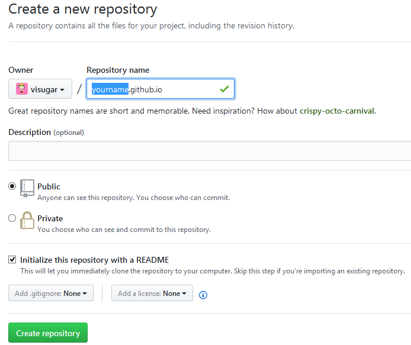

想拥有自己的BLOG，又不想还钱买服务器吗？使用HEXO来建立自己的BLOG，快速将BLOG部署到免费的GITHUB空间，同时有大量的主题可供选择！
本文转自：https://www.cnblogs.com/visugar/p/6821777.html
安装Git Bash
我一直不太喜欢在cmd中操作各种命令，所以挑了这个比较好使的Git Bash, 我的是windows环境，所以下载windows版本并安装就可以了。
下载地址
安装步骤：双击下载好的exe文件，一路next就好啦
安装好后，打开gitbash，查看版本：
命令：git version (写这篇博客的时候最新版本：2.12.2)
安装NodeJs
Hexo是基于nodeJS环境的静态博客，里面的npm工具很有用啊，所以还是老老实实把这玩意儿装了吧
下载地址(说明：LTS为长期支持版，Current为当前最新版)
安装步骤：反正下载好msi文件后，双击打开安装，也是一路next，不过在Custom Setup这一步记得选 Add to PATH ,这样你就不用自己去配置电脑上环境变量了，装完在按 win + r 快捷键调出运行，然后输入cmd确定，在cmd中输入path可以看到你的node是否配置在里面（环境变量），没有的话你就自由发挥吧。
查看版本：
命令：node -v
安装hexo
看到这么多安装，千万不要紧张，小哥哥小姐姐们一定要稳住，别怕，因为后面的东西都是在gitbash中用npm工具安装就好了。
先创建一个文件夹（用来存放所有blog的东西），然后cd到该文件夹下。
安装hexo命令：npm i -g hexo
安装完成后，查看版本：
初始化命令：hexo init ，初始化完成之后打开所在的文件夹可以看到以下文件：
解释一下：
node_modules：是依赖包
public：存放的是生成的页面
scaffolds：命令生成文章等的模板
source：用命令创建的各种文章
themes：主题
_config.yml：整个博客的配置
db.json：source解析所得到的
package.json：项目所需模块项目的配置信息
做好这些前置工作之后接下来的就是各种配配配置了。
搭桥到GITHUB
没账号的创建账号，有账号的看下面。
创建一个repo，名称为yourname.github.io, 其中yourname是你的github名称，按照这个规则创建才有用哦，如下：


回到gitbash中，配置github账户信息（YourName和YourEail都替换成你自己的）：


生成SSH并添加到github
在gitbash中输入：ssh-keygen -t rsa -C "youremail@example.com，生成ssh。然后按下图的方式找到id_rsa.pub文件的内容。

将上面获取的ssh放到github中：


添加一个 New SSH key ，title随便取，key就填刚刚那一段。
在gitbash中验证是否添加成功：ssh -T git@github.com
完成下一步你就成功啦！
用编辑器打开你的blog项目，修改_config.yml文件的一些配置(冒号之后都是有一个半角空格的)：
deploy:
type: git
repo: https://github.com/YourgithubName/YourgithubName.github.io.git
branch: master
回到gitbash中，进入你的blog目录，分别执行以下命令：
hexo clean
hexo generate
hexo server
注：hexo 3.0把服务器独立成个别模块，需要单独安装：npm i hexo-server。
打开浏览器输入：http://localhost:4000
接着你就可以遇见天使的微笑了~
部署项目上传到github
先安装一波：npm install hexo-deployer-git --save（这样才能将你写好的文章部署到github服务器上并让别人浏览到）
执行命令(建议每次都按照如下步骤部署)：
hexo clean
hexo generate
hexo deploy
注意deploy的过程中要输入你的username及passward。如下：
在浏览器中输入http://yourgithubname.github.io就可以看到你的个人博客啦，是不是很兴奋！
感觉gitbash中东西太多的时候输入clear命令清空。
绑定个人域名
不想绑定的自行忽略
第一步购买域名：随便在哪个网站买一个就好了，小花是在阿里云购买的visugar.com, DNS也是顺道在那买的。
第二步添加CNAME：在项目的source文件夹下新建一个名为CNAME的文件，在里面添加你购买的域名，比如我添加的是visugar.com，只能添加一个哦。
到DNS中添加一条记录：
其中ip地址为你的github的地址，可在cmd中ping一下就能看到(ping yourname.github.io)：
github-ip
接着再次部署一下，用你购买的域名打开，就可以看到你的博客啦~
修改及配置主题
hexo初始化之后默认的主题是landscape , 然后你可以去这个地址里面找到你想要的主题。在github中搜索你要的主题名称，里面都会有该主题的如何使用的介绍，按着来就好了，反正就是改改改！我选的是hueman,看起来挺不错，至少是我喜欢的类型。
跟该主题相关的配置在themes/hueman/_config.yml里面,然后根据你的需要在这配配配就行了。
有的东西我也不知道是啥玩意儿，你要多试多倒腾几次，就能意会啦
下面是针对我所选的主题的两小点(别的主题我没看，可能也是类似):
在导航栏添加点东西
例如我添加了一个更新日志的模块。
在主题的配置文件中，menu添加一栏：Board: /board。
然后在source中添加一个board，即对应上面的名字。然后再创建一个index.md，里面可以写你想写的内容。
在主题的hueman/langulages/zh-CN.yml中的index适当的位置加：board: ‘更新日志’，位置和名字是你自己设定。
重新部署，然后就OK了
在侧边栏添加点东西
回到你的主题的配置文件中，找到widgets一栏，在你要添加的位置处添加一条你自定义的名称。例如我的叫communiation且放在了第二行。
在上面所提到的zh-CN.yml文件中找到sidebar一栏，添加communiation: ‘你要设的名称’。
在hueman/layout/widget中添加一个communiation.ejs,填入模板
1 | <% if (site.posts.length) { %> |
添加RSS
先安装rss相关插件：npm i hexo-generator-feed
在你的项目的_config.yml配置文件下找到Extensions添加如下内容：
1 | Extensions #插件和主题 |
进入到你的主题的配置文件下，找到你的放rss的位置，添加/atom.xml即可。
重新部署再打开就能看到效果啦~
添加评论
先选一个你要使用的第三方评论系统，最好找个靠谱点的（我使用的是网易云跟帖）。
在主题的配置文件下找到comment，添加一行，例如我添加的是yungentie: 此处自由发挥
注册完评论系统后获取相应的代码，然后在主题的layout下找到comment新建一个ejs模板文件，名称自定义。
找到你的article.ejs模板文件，加上<%- partial(‘comment/你刚刚取得名字’) %>保存。
重新部署，OK啦
写文章部分
新建文章：hexo new ‘文章名’，然后你就可以在source/_posts路径下看到你创建的文章啦，编辑完成之后按照前面说的方式部署，在浏览器刷新就能看到你的文章了。
关于具体的文章编辑你可以看下官网的介绍
至于markdown，可以自行发挥啦~
小结一波
在哪里跌倒，就在哪里趴下，休息一会儿你会发现新大陆的哦~
本文针对的是从来没用hexo搭建过个人博客的小伙伴，不过文中获取会有一些小错误，欢迎大佬们指正，小花不胜感激！
感觉我好啰嗦啊，可是没办法，我就是这么爱打字丫